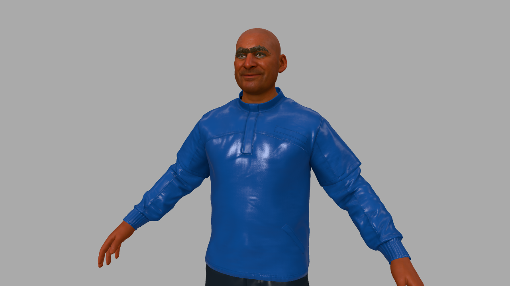

Make your own MetaHuman
A MetaHuman is a photoreal rigged character — and metahuman-to-glb is an open-source (MIT) pipeline that exports one from Unreal Engine 5.7 as a single web-ready .glb with all 51 ARKit face blendshapes. This tutorial loads one of its sample characters, Bruce, straight from the project's GitHub Pages URL, then makes him yours: no hair, a new skin tone and outfit, a smile posed from the blendshapes, selector-friendly classes on every part, and a still image from the Render tab. Open the editor, open the Shell tab, and paste each block in order.

fetch — no download, no account. To bring in your own MetaHuman, run that pipeline on it and fetch (or drag in) the resulting GLB exactly the same way. The sample files are about 80 MB, so the first load takes a moment.1 Import Bruce straight from the URL
The host sends Access-Control-Allow-Origin: *, so the browser can fetch the GLB directly. Wrapping the bytes in a File and handing it to the editor's own loader is the same path as File → Import or dragging a file onto the page — Draco and every other glTF extension are already handled:
const url = 'https://creategamecharacters.github.io/metahuman-to-glb/5.7/characters/bruce/bruce.glb';
const blob = await (await fetch(url)).blob();
editor.loader.loadFiles([new File([blob], 'bruce.glb', { type: 'model/gltf-binary' })]);A progress banner shows reading, then parsing, and then the Import glTF dialog appears. Leave the defaults and click OK — geometry compression is for later, and see the note in step 7 before you turn it on for a rigged character.
fetch, not fetchAPI, for binary files. fetchAPI returns parsed JSON or text, which is right for APIs and wrong for a 80 MB model. Plain fetch(...).blob() keeps the bytes intact.2 See what you imported
A MetaHuman GLB is a skinned body plus a pile of separate meshes. List them before touching anything — the names are how you'll address each part:
const rig = [];
scene.traverse(o => { if (o.isMesh) rig.push(o.name + (o.isSkinnedMesh ? ' (skinned)' : ' (hair card)')); });
rig;You'll see the skinned SKM_Bruce_FaceMesh_1…8 (skin, teeth, eyes, lashes), SKM_Bruce_BodyMesh001, the outfit pieces Bruce_Outfits_1/2/3 (jacket, pants, shoes), and flat card meshes for Hair_, Beard_, Mustache_ and Eyebrows_. The face also carries the 51 ARKit blendshapes:
const face = scene.getObjectByName('SKM_Bruce_FaceMesh_1');
Object.keys(face.morphTargetDictionary).length; // 51
Object.keys(face.morphTargetDictionary).slice(0, 5);
// ['eyeBlinkLeft', 'eyeLookDownLeft', 'eyeLookInLeft', 'eyeLookOutLeft', 'eyeLookUpLeft']3 Take the hair off
Hair, beard and moustache are separate card meshes, so removing them is just hiding three objects. The eyebrows are also cards, and stay:
['Hair_S_Casual_CardsMesh_Group0_LOD0',
'Beard_M_MuttonChops_CardMesh_Group0_LOD0',
'Mustache_S_Horseshoe_CardMesh_Group0_LOD0'
].forEach(n => { scene.getObjectByName(n).visible = false; });Eyebrows_M_Thin… and no beard, and her outfit meshes are named differently. If you'd rather not type names, the repo's presets/rigParts.js classifies the parts by mesh and material name: const p = findParts(scene) gives you p.hair, p.face, p.shirt, p.shoes… for any MetaHuman export.4 Change the skin and the clothes
Skin keeps its texture and is only tinted (the colour multiplies the map), so pores and detail survive. Clothes drop their texture for a flat colour. Both go through a small helper that edits a clone of the material and swaps it in — changing a material that has already been drawn can leave the WebGPU renderer with a stale uniform buffer, and a fresh material avoids that:
const restyle = (mesh, fn) => {
const edit = old => { const m = old.clone(); fn(m); old.dispose(); return m; };
mesh.material = Array.isArray(mesh.material) ? mesh.material.map(edit) : edit(mesh.material);
};
// Skin: tint only, keep the texture
for (const n of ['SKM_Bruce_FaceMesh_1', 'SKM_Bruce_BodyMesh001']) {
restyle(scene.getObjectByName(n), m => m.color.set(0xb98a6c));
}
// Clothes: flat colour, no texture
restyle(scene.getObjectByName('Bruce_Outfits_1'), m => { m.map = null; m.color.set(0x1b3a6b); m.roughness = 0.6; }); // jacket
restyle(scene.getObjectByName('Bruce_Outfits_2'), m => { m.map = null; m.color.set(0x202428); m.roughness = 0.7; }); // pants
restyle(scene.getObjectByName('Bruce_Outfits_3'), m => { m.map = null; m.color.set(0xf2f2f2); m.roughness = 0.5; }); // shoesChange the hex values to change the person. Skin is the one to tune by eye: lighter tints read warmer under the default environment than they look as swatches.
5 Pose the face with the ARKit blendshapes
Each of the 51 shapes is a morph target with an influence from 0 to 1. The same shape names exist on the face, the eyebrow cards, and (here) the beard and moustache cards, so one helper sets a shape everywhere it exists:
const express = (shape, value) => scene.traverse(o => {
const i = o.morphTargetDictionary?.[shape];
if (i !== undefined) o.morphTargetInfluences[i] = value;
});
express('mouthSmileLeft', 0.8);
express('mouthSmileRight', 0.8);
express('cheekSquintLeft', 0.4);
express('cheekSquintRight', 0.4);
express('browInnerUp', 0.3);Other useful ones: jawOpen, eyeBlinkLeft/eyeBlinkRight, mouthPucker, browDownLeft, eyeLookUpLeft. Because they're ordinary morph target influences, the Universal Timeline can keyframe them like any other number — a blink or a talking mouth is just a short clip.
6 Tag the parts with classes
The auto-derived classes on an imported rig are mostly material-name noise (.mifaceskinbakedlod0skmbrucefacemesh). Add a few meaningful ones with tagClass — it's a command, so it's undoable and travels with the scene — and the parts become addressable by selector:
tagClass(scene.getObjectByName('SKM_Bruce_FaceMesh_1'), 'head');
tagClass(scene.getObjectByName('SKM_Bruce_FaceMesh_1'), 'skin');
tagClass(scene.getObjectByName('SKM_Bruce_BodyMesh001'), 'skin');
tagClass(scene.getObjectByName('Bruce_Outfits_1'), 'jacket');
tagClass(scene.getObjectByName('Bruce_Outfits_2'), 'trousers');
tagClass(scene.getObjectByName('Bruce_Outfits_3'), 'shoes');
$S('.skin').count(); // 2 — head and body, both retinted together by one selector7 Frame the shot and take a snapshot
Move the viewport camera to a head-and-shoulders view and project nothing by guesswork — set the position and look-at target, and tell the orbit controls the same target so the next mouse drag pivots around his face:
const cam = editor.camera;
cam.position.set(0.35, 1.68, 1.15);
cam.lookAt(0, 1.52, 0);
editor.controls.center.set(0, 1.52, 0);
editor.signals.cameraChanged.dispatch(cam);Now open the Render tab. The Snapshot section at the top renders the scene once, offscreen, with no grid, gizmos or skeleton lines: pick Current view, a size (1280 × 720 for the picture above), PNG, and press Take Snapshot. It downloads the file and leaves a preview with Download again and Copy to clipboard buttons under it. Tick Transparent for a cut-out with no background.
8 Save it
Everything above is ordinary scene state — geometry, materials, classes, blendshape influences — so a normal commit captures it. Set your repository and token in the Git tab, then use Commit Scene. Expect a big commit for a MetaHuman: the face alone carries 51 full copies of its vertices per mesh, so the scene is stored as roughly a hundred megabytes of binary asset files plus a small scene.json that references them.
// Sanity-check what you're about to commit
$S('.skin').count(); // 2
scene.getObjectByName('Hair_S_Casual_CardsMesh_Group0_LOD0').visible; // false
editor.history.undos.length; // commands issued this session